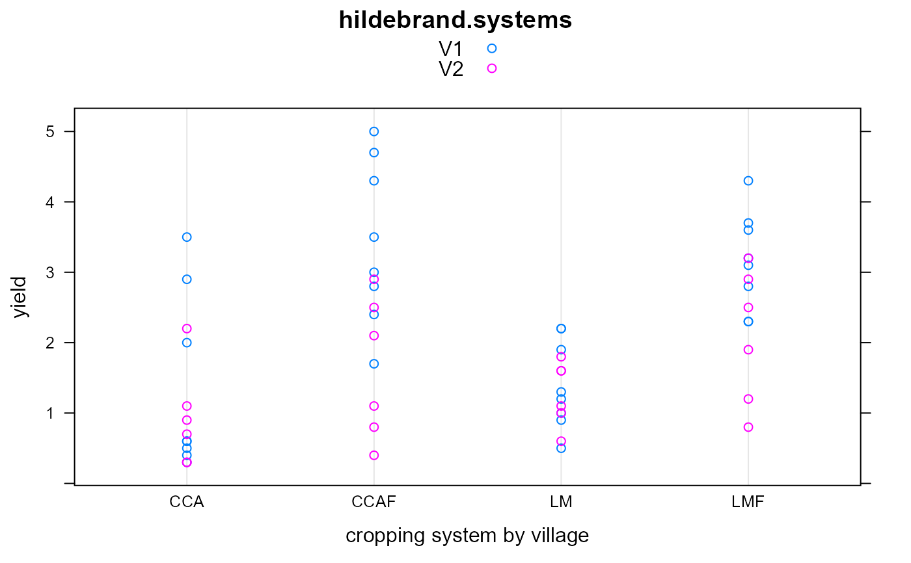
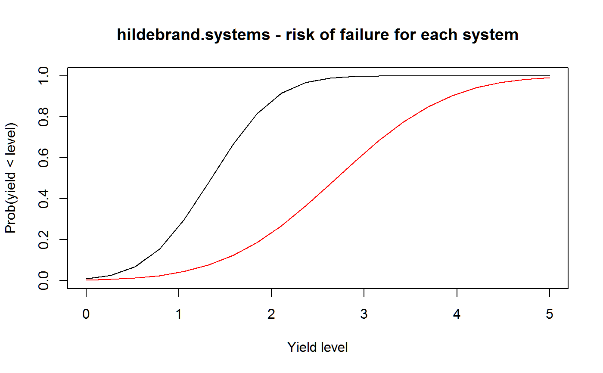

hildebrand.systems.RdMaize yields for four cropping systems at 14 on-farm trials.
A data frame with 56 observations on the following 4 variables.
villagevillage, 2 levels
farmfarm, 14 levels
systemcropping system
yieldyield, t/ha
Yields from 14 on-farm trials in Phalombe Project region of south-eastern Malawi. The farms were located near two different villages.
On each farm, four different cropping systems were tested. The systems were: LM = Local Maize, LMF = Local Maize with Fertilizer, CCA = Improved Composite, CCAF = Improved Composite with Fertilizer.
P. E. Hildebrand, 1984. Modified Stability Analysis of Farmer Managed, On-Farm Trials. Agronomy Journal, 76, 271--274. https://doi.org/10.2134/agronj1984.00021962007600020023x
H. P. Piepho, 1998. Methods for Comparing the Yield Stability of Cropping Systems. Journal of Agronomy and Crop Science, 180, 193--213. http://doi.org/10.1111/j.1439-037X.1998.tb00526.x
library(agridat) data(hildebrand.systems) dat <- hildebrand.systems # Piepho 1998 Fig 1 libs(lattice) dotplot(yield ~ system, dat, groups=village, auto.key=TRUE, main="hildebrand.systems", xlab="cropping system by village")# Plot of risk of 'failure' of System 2 vs System 1 s11 = .30; s22 <- .92; s12 = .34 mu1 = 1.35; mu2 = 2.70 lambda <- seq(from=0, to=5, length=20) system1 <- pnorm((lambda-mu1)/sqrt(s11)) system2 <- pnorm((lambda-mu2)/sqrt(s22)) # A simpler view plot(lambda, system1, type="l", xlim=c(0,5), ylim=c(0,1), xlab="Yield level", ylab="Prob(yield < level)", main="hildebrand.systems - risk of failure for each system")#> [1] 0.03309629# .0331 # ----------------------------------------------------------------------------# asreml3 libs(asreml) # Environmental variance model, unstructured correlations dat <- dat[order(dat$system, dat$farm),] m1 <- asreml(yield ~ system, data=dat, rcov = ~us(system):farm)#> ASReml: Fri Aug 16 14:59:14 2019 #> #> LogLik S2 DF wall cpu #> -175.0601 1.0000 52 14:59:14 0.0 #> -127.1858 1.0000 52 14:59:14 0.0 #> -73.9484 1.0000 52 14:59:14 0.0 #> -29.5286 1.0000 52 14:59:14 0.0 #> -11.0057 1.0000 52 14:59:14 0.0 #> -4.3504 1.0000 52 14:59:14 0.0 #> -2.5482 1.0000 52 14:59:14 0.0 #> -2.2646 1.0000 52 14:59:14 0.0 #> -2.2510 1.0000 52 14:59:14 0.0 #> -2.2510 1.0000 52 14:59:14 0.0 #> -2.2510 1.0000 52 14:59:14 0.0 #> #> Finished on: Fri Aug 16 14:59:14 2019 #> #> LogLikelihood Converged#> ASReml: Fri Aug 16 14:59:14 2019 #> #> LogLik S2 DF wall cpu #> -2.2510 1.0000 52 14:59:14 0.0 #> -2.2510 1.0000 52 14:59:14 0.0 #> -2.2510 1.0000 52 14:59:14 0.0 #> -2.2510 1.0000 52 14:59:14 0.0 #> #> Finished on: Fri Aug 16 14:59:14 2019 #> #> LogLikelihood Converged## system pred.value std.error est.stat ## CCA 1.164 0.2816 Estimable ## CCAF 2.657 0.3747 Estimable ## LM 1.35 0.1463 Estimable ## LMF 2.7 0.2561 Estimable # Variances, table 5 libs(lucid) vc(m1)[c(2,4,7,11),]#> effect component std.error z.ratio constr #> R!system.CCA:CCA 1.11 0.4354 2.5 P #> R!system.CCAF:CCAF 1.966 0.771 2.5 P #> R!system.LM:LM 0.2996 0.1175 2.5 P #> R!system.LMF:LMF 0.9185 0.3603 2.5 P## effect component std.error z.ratio constr ## R!system.CCA:CCA 1.11 0.4354 2.5 pos ## R!system.CCAF:CCAF 1.966 0.771 2.5 pos ## R!system.LM:LM 0.2996 0.1175 2.5 pos ## R!system.LMF:LMF 0.9185 0.3603 2.5 pos # Stability variance model m2 <- asreml(yield ~ system, data=dat, random = ~ farm, rcov = ~ at(system):units)#> ASReml: Fri Aug 16 14:59:14 2019 #> #> LogLik S2 DF wall cpu #> -22.5014 1.0000 52 14:59:14 0.0 #> -18.0882 1.0000 52 14:59:14 0.0 #> -15.9705 1.0000 52 14:59:14 0.0 (1 restrained) #> -15.2534 1.0000 52 14:59:14 0.0 (1 restrained) #> -15.1354 1.0000 52 14:59:14 0.0 (1 restrained) #> -15.1225 1.0000 52 14:59:14 0.0 (1 restrained) #> -15.1214 1.0000 52 14:59:14 0.0 #> -15.1214 1.0000 52 14:59:14 0.0 #> -15.1214 1.0000 52 14:59:14 0.0 #> #> Finished on: Fri Aug 16 14:59:14 2019 #> #> LogLikelihood Converged#> ASReml: Fri Aug 16 14:59:14 2019 #> #> LogLik S2 DF wall cpu #> -15.1214 1.0000 52 14:59:14 0.0 #> -15.1214 1.0000 52 14:59:14 0.0 #> -15.1214 1.0000 52 14:59:14 0.0 #> -15.1214 1.0000 52 14:59:14 0.0 #> #> Finished on: Fri Aug 16 14:59:14 2019 #> #> LogLikelihood Converged# Variances, table 6 vc(m2)#> effect component std.error z.ratio constr #> farm!farm.var 0.2996 0.1175 2.5 P #> system_CCA!variance 0.4136 0.1622 2.5 P #> system_CCAF!variance 1.267 0.4969 2.5 P #> system_LM!variance 0.0000002 NA NA B #> system_LMF!variance 0.5304 0.208 2.5 P## effect component std.error z.ratio constr ## farm!farm.var 0.2996 0.1175 2.5 pos ## system_CCA!variance 0.4136 0.1622 2.5 pos ## system_CCAF!variance 1.267 0.4969 2.5 pos ## system_LM!variance 0.0000002 NA NA bound ## system_LMF!variance 0.5304 0.208 2.5 pos# ----------------------------------------------------------------------------## libs(asreml4) ## # Environmental variance model, unstructured correlations ## dat <- dat[order(dat$system, dat$farm),] ## m1 <- asreml(yield ~ system, data=dat, ## resid = ~us(system):farm) ## # Means, table 5 ## p1 <- predict(m1, data=dat, classify="system")$pvals ## ## system pred.value std.error est.stat ## ## CCA 1.164 0.2816 Estimable ## ## CCAF 2.657 0.3747 Estimable ## ## LM 1.35 0.1463 Estimable ## ## LMF 2.7 0.2561 Estimable ## # Variances, table 5 ## libs(lucid) ## vc(m1)[c(2,4,7,11),] ## ## effect component std.error z.ratio constr ## ## R!system.CCA:CCA 1.11 0.4354 2.5 pos ## ## R!system.CCAF:CCAF 1.966 0.771 2.5 pos ## ## R!system.LM:LM 0.2996 0.1175 2.5 pos ## ## R!system.LMF:LMF 0.9185 0.3603 2.5 pos ## # Stability variance model ## m2 <- asreml(yield ~ system, data=dat, ## random = ~ farm, ## resid = ~ dsum( ~ units|system)) ## m2 <- update(m2) ## p2 <- predict(m2, data=dat, classify="system")$pvals ## # Variances, table 6 ## vc(m2) ## ## effect component std.error z.ratio constr ## ## farm!farm.var 0.2996 0.1175 2.5 pos ## ## system_CCA!variance 0.4136 0.1622 2.5 pos ## ## system_CCAF!variance 1.267 0.4969 2.5 pos ## ## system_LM!variance 0.0000002 NA NA bound ## ## system_LMF!variance 0.5304 0.208 2.5 pos